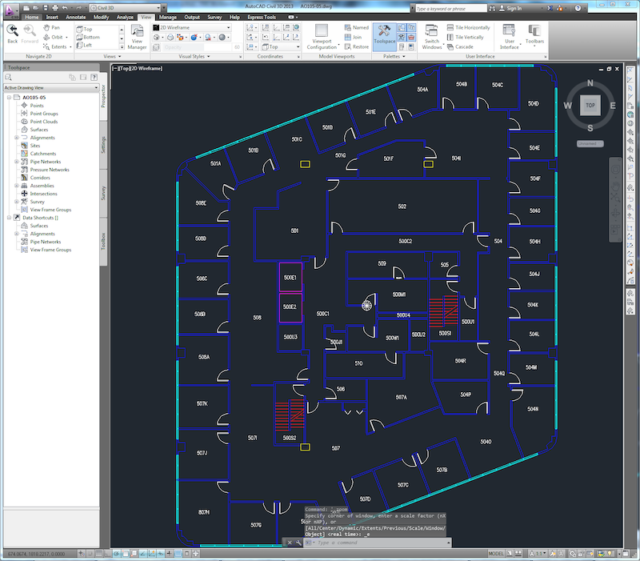
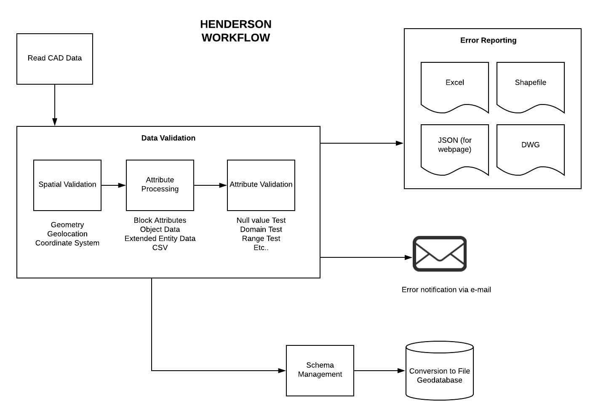

Learning Objectives
After completing this lesson, you’ll be able to:
- Describe the digital plan submission process.
- Understand how automating plan submissions saves time and money.
- Outline a basic digital plan submission workflow using the FME data integration platform.
Digital Plan Submission Workflows
Professionals that have to manage, validate, and integrate user-submitted data face significant challenges maintaining data quality and automating repetitive manual tasks. For example, GIS Technicians working for local governments often have users, e.g. land developers, submit as-built Computer-aided Design (CAD) drawings as part of a development project. The technician cannot simply accept any dataset sent their way; instead, they have to carefully validate the incoming data to ensure it meets their standards.
Through this course, you will learn how to automate digital plan submission using the FME data integration platform. It is most directly relevant for GIS technicians working for local governments. However, the FME workflow described is also applicable to:
- Utilities professionals who need to automate data validation, quality assurance, and loading in CAD to GIS workflows.
- Professionals at provincial/state or federal government agencies responsible for reviewing plans for projects on public lands.
- Anyone who faces challenges validating the geometry or attributes of user-submitted data and integrating it with an existing database.
Save Time Through Automation

Jennifer is overwhelmed! She works as a GIS Specialist for a fast-growing city. New residential and commercial developments are being planned, approved, and built every week. Her small team is having trouble reviewing the many digital plans being submitted for development projects and converting those CAD drawings into their GIS database. They receive data submissions at a number of stages of the development process:
- Surveyors submit a plan in the form of a cadastral legal survey.
- Once approved, an infrastructure design is created, including drainage, roads, etc.
- Construction begins, which results in an as-constructed drawing.
- Engineers submit an as-built drawing.

AutoCAD DWG floor plan for a new high-rise.
Currently, they have to do a lot of manual data quality assurance and data conversion work at each stage. This manual review process introduces the risk of costly mistakes and uses valuable staff time. They need help!
FME to the rescue! With FME, Jennifer can create an automated process where land developers can directly submit their CAD drawings to a web portal. Upon submission, the data will automatically be validated to ensure they meet the City’s requirements. If the validation is successful, the data are loaded into the City’s GIS database, matching the schema properly. If the digital plan fails validation, the submitter receives a validation report indicating which parts of the plan failed. They can then quickly address the problem.
Creating an automated digital plan submission workflow in FME requires several steps.
- Identify the standards to be used to validate the submitted plans. Stakeholders must set standards so that the validation process can be built to fit business needs. Geospatial standards can be applied here.
- Create a validation workflow. FME workspace authors must build a workspace that validates all relevant geometry and attributes. It should also filter the features so different actions can be taken with valid and invalid features. Invalid features should be reported on so the submitter can fix any issues. Once all features are valid, the data should be loaded into a GIS, optionally modifying its schema to match the destination.
- Publish the validation workflow to the web as an app. Publishing the workspace to FME Server allows the workspace to run on the web. Turning the workspace into an FME Server App allows the general public to access the workflow. More complex projects could use a custom front-end application, accessing FME on the back end with the FME Server REST API.
- Test the validation workflow. Once published as an app, the workflow should be thoroughly tested with a variety of datasets to ensure it is functioning properly.
- Deploy the validation workflow. Once testing is complete, the app can be deployed publicly, either provided as a link or embedded in a relevant section of the City’s website.

A conceptual diagram of a digital plan submission workflow from the City of Henderson, Nevada, courtesy of Consortech.